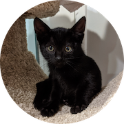
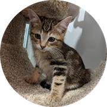
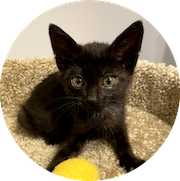

<section id="main" class="wrapper style1">
  <div class="container">
<!-- <h4><i>2530 outdoor cats and 550 pets helped since 2023</i></h4>
<hr class="major" /> -->
    <h3>Support our mission</h3>
    <div id="donations">
      <form action="https://www.paypal.com/donate" method="post" target="_top">
      <input type="hidden" name="hosted_button_id" value="3CU9XS5BLTLWE" />
      <button class="donate-button" id="donate-button-home" type="submit">Donate to help save lives</button>
      
    </form>
    <script>
    (function() {
      const btn = document.getElementById('donate-button-home');
      if (!btn) return;

      btn.addEventListener('click', function() {
        if (typeof window.gtag === 'function') {
          gtag('event', 'donate_click', {
            event_category: 'donations',
            event_label: 'homepage'
          });
        }
        // no preventDefault; form opens PayPal in a new tab
      });
    })();
    </script>
    <p>To decrease the number of unfixed cats in the community. Bay Area Cats is a 501(c)(3) non-profit organization. Our organization provides resources and enables the community to do trap-neuter-return (TNR). We spend time training, educating, rescuing kittens, and assisting with TNR efforts. We help connect people to spay/neuter resources and support those with financial need. Our community cats and kittens could use your help! You can also donate via <a target="_blank" href="https://www.paypal.com/donate/?hosted_button_id=85C7UMCXTS2GC">PayPal</a> or <a href="https://venmo.com/code?user_id=3668070472091276232">Venmo</a>, and through our <a href="https://www.chewy.com/g/bay-area-cats_b103747788?utm_medium=email&utm_source=transactional&utm_campaign=SHELTER_BUSINESS_PAGE_APPROVED#wish-list">Chewy</a> or <a href="https://a.co/4CxxGb9">Amazon Wishlist</a>.<p>
<p>
      If you would like to get involved in trap-neuter-return (TNR) or volunteer at our adoption center, please submit <a href="https://bayareacats.org/volunteer">bayareacats.org/volunteer</a>. Sign up to foster at <a href="https://bayareacats.org/foster">bayareacats.org/foster</a>.</p>

      Join our <a href="https://facebook.com/groups/bayareatnr">Facebook group</a> for support with TNR. If you have cats or kittens in your yard, follow the <a href="resources">Getting Started</a> steps.
      <br/><br/>

            <h3>Need help with cats in Sunnyvale?</h3>
      <p>We can help! Sunnyvale residents can get help by submitting <a href="https://bayareacats.org/help">this form</a>.

    </p>

      <h3>Our impact in 2025</h3>
      <iframe class="airtable-embed" src="https://airtable.com/embed/appklgrXgkT9hR2Ts/shru0BpoXma7ppjgh" frameborder="0" onmousewheel="" width="100%" height="838" style="background: transparent; border: 1px solid #ccc;"></iframe>

<!--       <div class='tableauPlaceholder' id='viz1709133921600' style='position: relative'>
<object class='tableauViz'  style='display:none;'>
<param name='host_url' value='https%3A%2F%2Fpublic.tableau.com%2F' />
<param name='embed_code_version' value='3' />
<param name='site_root' value='' />
<param name='name' value='public_org_dashboard_2024&#47;PublicSummaryAutosizing' />
<param name='tabs' value='no' />
<param name='toolbar' value='yes' />
<param name='static_image' value='https:&#47;&#47;public.tableau.com&#47;static&#47;images&#47;pu&#47;public_org_dashboard_2024&#47;PublicSummaryAutosizing&#47;1.png' />
<param name='animate_transition' value='yes' />
<param name='display_static_image' value='yes' />
<param name='display_spinner' value='yes' />
<param name='display_overlay' value='yes' />
<param name='display_count' value='yes' />
<param name='language' value='en-US' />
<param name='filter' value='Org_ID=16010'/>
</object>
</div>                

<script type='text/javascript'>                    
var divElement = document.getElementById('viz1709133921600');                    
var vizElement = divElement.getElementsByTagName('object')[0];                    
if ( divElement.offsetWidth > 800 ) { vizElement.style.width='100%';vizElement.style.maxWidth='1200px';vizElement.style.height=(divElement.offsetWidth*0.75)+'px';vizElement.style.maxHeight='991px';}
else if ( divElement.offsetWidth > 500 ) { vizElement.style.width='100%';vizElement.style.maxWidth='1200px';vizElement.style.height=(divElement.offsetWidth*0.75)+'px';vizElement.style.maxHeight='991px';}
else { vizElement.style.width='100%';vizElement.style.height='1727px';}                    
var scriptElement = document.createElement('script');                    
scriptElement.src = 'https://public.tableau.com/javascripts/api/viz_v1.js';                    
vizElement.parentNode.insertBefore(scriptElement, vizElement);                
</script>


<div class='tableauPlaceholder' id='viz1709131356117' style='position: relative'>
<object class='tableauViz'  style='display:none;'>
<param name='host_url' value='https%3A%2F%2Fpublic.tableau.com%2F' />
<param name='embed_code_version' value='3' />
<param name='site_root' value='' />
<param name='name' value='internal_org_dashboard_2024&#47;DetailAutosizing' />
<param name='tabs' value='no' />
<param name='toolbar' value='yes' />
<param name='static_image' value='https:&#47;&#47;public.tableau.com&#47;static&#47;images&#47;in&#47;internal_org_dashboard_2024&#47;DetailAutosizing&#47;1.png' />
<param name='animate_transition' value='yes' />
<param name='display_static_image' value='yes' />
<param name='display_spinner' value='yes' />
<param name='display_overlay' value='yes' />
<param name='display_count' value='yes' />
<param name='language' value='en-US' />
<param name='filter' value='Org_ID=16010'/>
</object>
</div>                


<script type='text/javascript'>                    
var divElement = document.getElementById('viz1709131356117');                    
var vizElement = divElement.getElementsByTagName('object')[0];                    
if ( divElement.offsetWidth > 800 ) { vizElement.style.width='100%';vizElement.style.maxWidth='1200px';vizElement.style.height=(divElement.offsetWidth*0.75)+'px';vizElement.style.maxHeight='991px';}
else if ( divElement.offsetWidth > 500 ) { vizElement.style.width='100%';vizElement.style.maxWidth='1200px';vizElement.style.height=(divElement.offsetWidth*0.75)+'px';vizElement.style.maxHeight='991px';}
else { vizElement.style.width='100%';vizElement.style.height='2827px';}                    
var scriptElement = document.createElement('script');                    
scriptElement.src = 'https://public.tableau.com/javascripts/api/viz_v1.js';                    
vizElement.parentNode.insertBefore(scriptElement, vizElement);                
</script>
 
 <div class='tableauPlaceholder' id='viz1737067438973' style='position: relative'>
<noscript><a href='#'></a></noscript>
<object class='tableauViz'  style='display:none;'>
<param name='host_url' value='https%3A%2F%2Fpublic.tableau.com%2F' />
 <param name='embed_code_version' value='3' />
 <param name='site_root' value='' />
<param name='name' value='CSD_ORGID&#47;CommunityServicesOverall' />
<param name='tabs' value='no' />
<param name='toolbar' value='yes' />
<param name='static_image' value='https:&#47;&#47;public.tableau.com&#47;static&#47;images&#47;CS&#47;CSD_ORGID&#47;CommunityServicesOverall&#47;1.png' />
<param name='animate_transition' value='yes' />
<param name='display_static_image' value='yes' />
<param name='display_spinner' value='yes' />
<param name='display_overlay' value='yes' />
<param name='display_count' value='yes' />
<param name='language' value='en-US' />
<param name=’filter’ value=’OrgID=16010’/>
</object>
</div>               
 
<script type='text/javascript'>                   
var divElement = document.getElementById('viz1737067438973');                   
var vizElement = divElement.getElementsByTagName('object')[0];                   
if ( divElement.offsetWidth > 800 ) { vizElement.style.width='100%';vizElement.style.maxWidth='1200px';vizElement.style.height=(divElement.offsetWidth*0.75)+'px';vizElement.style.maxHeight='991px';}
else if ( divElement.offsetWidth > 500 ) { vizElement.style.width='100%';vizElement.style.maxWidth='1200px';vizElement.style.height=(divElement.offsetWidth*0.75)+'px';vizElement.style.maxHeight='991px';}
else { vizElement.style.width='100%';vizElement.style.height='1627px';}                    
var scriptElement = document.createElement('script');                   
scriptElement.src = 'https://public.tableau.com/javascripts/api/viz_v1.js';                    vizElement.parentNode.insertBefore(scriptElement, vizElement);               
</script>
  -->
      <p></p>
    
    </div>


  	<!-- <h3>Have cats or kittens in your yard?</h3>
		<div id="donations">
  	<p><b>If you feed them, you must fix them!</b> Cats multiply very quickly, and two cats can be 50 or more in a year. <a href="https://www.alleycat.org/our-work/trap-neuter-return/">Trap-neuter-return</a> (TNR) is the only way to control feral cat populations. Start by following the <a href="resources">Getting Started</a> steps. We provide advice and resources for TNR for feral cats in the Santa Clara County.

  	</p>
  	</div> -->

  	<hr class="major" />

		<div class="row">
			<div class="4u">
				<section class="special box">
					<a href="trapping" style="text-decoration:none;color:inherit;">
						<i class="fa" style="height:15px"></i>
						<h4>Trapping</h4>
					</a>
					<p>Check out the <a href="trapping">Trapping</a> page for trapping tips and resources.</p>
				</section>
			</div>
			<div class="4u">
				<section class="special box">
					<a href="adoptions" style="text-decoration:none;color:inherit;">
						<i class="fa" style="height:15px"></i>
						<h4>Adoptions</h4>
					</a>
					<p>Check out our available cats and kittens <a href="adoptions">Adoptions</a> page.</p>
				</section>
			</div>
			
			<div class="4u">
				<section class="special box">
					<a href="volunteer" style="text-decoration:none;color:inherit;">
						<i class="fa" style="height: 15px"></i>
						<h4>Volunteer</h4>
					</a>
					<p>Join our team! Sign up to volunteer at <a href="volunteer">bayareacats.org/volunteer</a>.</p>
				</section>
			</div>
		</div>

		<!-- <hr class="major" /> -->

		<!-- <h3>Donations</h3>
		<div id="donations">
  	<p>Our community cats and kittens could use your help. If you would like to get involved in trap-neuter-return (TNR) or fostering cats or kittens, please reach out. Donations of trap bait (wet or dry cat food or tuna), puppy pee pads, or other cat supplies are gladly accepted. You can also donate via <a target="_blank" href="https://www.paypal.com/donate/?hosted_button_id=85C7UMCXTS2GC">PayPal</a> or <a href="https://venmo.com/code?user_id=3668070472091276232">Venmo</a>, and through our <a href="https://www.chewy.com/g/bay-area-cats_b103747788?utm_medium=email&utm_source=transactional&utm_campaign=SHELTER_BUSINESS_PAGE_APPROVED#wish-list">Chewy</a> or <a href="https://a.co/4CxxGb9">Amazon Wishlist</a>. Contact us at <a href="mailto:info@bayareacats.org">info@bayareacats.org</a> with any questions or if you want to get involved. Bay Area Cats is a 501(c)(3) non-profit organization.
  	</p>
  	</div> -->
	</div>
</section>

				
			
		
